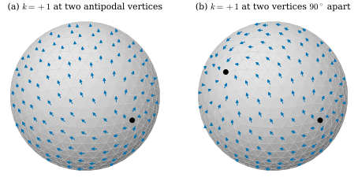
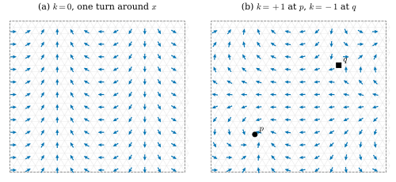

45.4 Vector Field Design with Trivial Connections
Goals
- trivial connection을 정의하고, 그 transport가 path에 무관하여 vector 하나에서 field 전체가 정해짐을 증명할 수 있다. 모든 discrete field가 어떤 trivial connection에 대해 parallel임도 보일 수 있다.
- discrete field의 index를 정의하고 discrete Poincaré–Hopf theorem \(\sum_i k_i = \chi\)를 증명할 수 있다.
- 지정한 index를 갖는 trivial connection 가운데 Levi-Civita에 가장 가까운 것이 유일하며 Hodge decomposition의 두 조각(Poisson solve 하나와 \(2g\times2g\) system 하나)으로 주어짐을 증명하고 구현할 수 있다.
- sphere, torus, cube에서 singularity를 놓고 옮기며 가장 매끄러운 direction field를 만들 수 있다.
Prerequisites
- Definition 45.3.8 (discrete connection), Proposition 45.3.9 (holonomy), Definition 45.3.14 (curvature), Proposition 45.3.15
- Theorem 45.2.11 (tree-cotree generators), Proposition 45.2.14 (harmonic basis와 period matrix)
- Theorem 45.1.12, Theorem 45.1.16 (Hodge decomposition)
- Proposition 42.6.1 (닫힌 mesh의 Poisson solve), Theorem 40.2.1
Motivation
Section 45.3에서 Levi-Civita connection으로 vertex 둘레를 돌면 vector가 \(\delta_i\)만큼 돈다는 것을 보았다. 그러므로 face 하나에 vector를 두고 Levi-Civita transport로 이웃에 퍼뜨리면, 어느 길로 갔는지에 따라 같은 face에 다른 vector가 도착한다. field가 정의되지 않는다. 해결책은 connection 쪽을 고치는 것이다. dual edge마다 각 \(\xi_e\)를 더해 모든 dual cycle의 holonomy가 \(0\)이 되게 하면 transport가 path에 무관해지고 field가 하나로 정해진다. 그러나 Gauss–Bonnet theorem(Proposition 45.3.15)은 curvature의 합이 \(2\pi\chi\)라고 못 박는다. sphere에서는 curvature를 어디엔가 남겨야 하고, \(2\pi\)의 정수배로 남기면 holonomy는 여전히 \(0\)(mod \(2\pi\))이다. 그렇게 남긴 자리가 field의 singularity다. 이 절은 singularity의 자리와 index를 고르면 그것을 갖는 가장 매끄러운 field가 Poisson equation 하나로 나온다는 것을 보인다 [Crane10].
Trivial Connections
Definition 45.4.1 (trivial connection). boundary가 없는 oriented mesh 위의 discrete connection \(\xi\)가 모든 dual cycle(정수 계수)에서 holonomy \(0\) (mod \(2\pi\))을 가지면 \(\xi\)를 trivial connection(자명한 접속)이라 한다. 이때 vertex마다 curvature는 \(2\pi\)의 정수배이고(Definition 45.3.14), \(k_i := \kappa^\xi_i/2\pi \in \Z\)를 \(i\)에서의 \(\xi\)의 index(지표)라 한다. \(k_i \ne 0\)인 vertex를 \(\xi\)의 singularity(특이점)라 한다.
곧 singularity가 아닌 vertex에서는 curvature \(\kappa^\xi_i\)가 실수로 \(0\)이고, singularity에서는 \(\kappa^\xi_i = 2\pi k_i\), 곧 dual cell 둘레를 도는 vector가 정확히 \(k_i\)바퀴 돈 것으로 센다. holonomy는 어느 쪽이든 \(0\)(mod \(2\pi\))이다. 곡면의 손잡이를 감는 loop에서도 holonomy가 \(0\)(mod \(2\pi\))이어야 한다는 것이 정의의 중요한 부분이다. dual cell의 합의 boundary만 보면 “flat”할 뿐 trivial이 아닐 수 있다(Proposition 45.4.4 뒤).
Example 45.4.2 (the flat torus and the icosphere).
(a) flat torus(ch45.FlatTorus)에서는 \(\xi = 0\)(Levi-Civita)이 trivial이고 singularity가 없다. 모든 \(\delta_i = 0\)이고, 펼친 평면에서 transport가 평행하게 옮기는 것이므로 어느 dual cycle을 돌아도 vector가 그대로다(Exercise 45.3.1과 같은 계산). 그 parallel field는 평면의 상수 field다. (b) icosphere의 Levi-Civita connection은 trivial이 아니다. dual cell 둘레의 holonomy \(\delta_i\)가 \(0\)과 \(2\pi\) 사이의 작은 수(icosphere(3)에서 \(0.02\) 안팎)이기 때문이다.
Verification: verify/v-45-4-trivial-connections.py
Proposition 45.4.3 (transport by a trivial connection does not depend on the path). \(\xi\)가 trivial connection이면 face \(f\)에서 face \(g\)로 가는 두 dual path를 따른 transport는 같다(mod \(2\pi\)). 따라서 한 face \(f_0\)의 각 \(\psi_{f_0}\)을 정하면, 모든 face의 각 \(\psi_g\) := (\(f_0\)에서 \(g\)로 가는 아무 dual path를 따라 옮긴 각)이 잘 정의되고, 그 field는 \(\xi\)에 대해 parallel이다. 곧 모든 dual edge \(e^\star\)(\(g \to f\))에서 \(\psi_f \equiv \psi_g + \rho_e + \xi_e\)이다.
Proof. 두 path의 dual chain을 \(p\), \(q\)라 하면 \(p - q\)는 정수 계수 dual cycle이다(boundary가 \([g] - [f] - ([g] - [f]) = 0\)). Proposition 45.3.9의 linearity로 두 transport의 차는 \(\operatorname{hol}_\xi(p - q) \equiv 0\)이다. 두 번째 주장은 \(f_0\)에서 \(g\)까지의 path에 dual edge \(e^\star\) 하나를 붙이면 \(f\)까지의 path가 된다는 것이다. 이 명제는 [Cr §8.3.5]의 연습 하나를 증명으로 쓴 것이다.
trivial인지 확인하려면 모든 dual cycle을 볼 필요가 없다. dual cell과 generator의 dual loop만 보면 된다.
Proposition 45.4.4 (dual cells and generators decide). boundary가 없는 connected oriented mesh와 tree-cotree의 loop \(c_a\), \(c^\star_a\)(Theorem 45.2.11)를 생각하자. 정수 계수 dual cycle \(c^\star\)는 정수 \(m_a = c^\star\cdot c_a\)와 정수 vector \(y\)에 대해 \(c^\star = \sum_am_ac^\star_a + \sum_iy_i\,\partial i^\star\)로 쓰인다. 따라서 모든 discrete connection \(\xi\)에서 \[ \operatorname{hol}_\xi(c^\star) \equiv \sum_am_a\operatorname{hol}_\xi(c^\star_a) + \sum_iy_i\,\kappa^\xi_i \pmod{2\pi} \] 이다. 특히 \(\xi\)가 trivial일 필요충분조건은 모든 \(\kappa^\xi_i \in 2\pi\Z\)이고 모든 \(\operatorname{hol}_\xi(c^\star_a) \equiv 0\)인 것이다.
Proof. \(c' := c^\star - \sum_am_ac^\star_a\)는 dual cycle(곧 closed 1-form, Proposition 45.2.8)이고 \(c'\cdot c_b = m_b - m_b = 0\)이다(Theorem 45.2.11(b)). closed form의 class는 generator 위의 period로 정해지므로(Remark 45.2.16) \(c'\)은 exact이다: \(c' = d_0y'\). \(c'\)의 성분이 정수이므로 edge마다 \(y'_j - y'_i\)가 정수이고, mesh가 connected라 \(y'\)에서 상수를 빼면 정수 vector가 된다. \(y := -y'\)으로 두면 \(c' = -d_0y = \sum_iy_i(-d_0e_i) = \sum_iy_i\,\partial i^\star\)이다(Proposition 45.2.8 뒤). 식은 Proposition 45.3.9의 linearity와 \(\operatorname{hol}_\xi(\partial i^\star) \equiv \kappa^\xi_i\)(Definition 45.3.14)에서 나온다. \(m_a\), \(y_i\)가 정수이므로 오른쪽의 각 항이 \(0\)(mod \(2\pi\))이면 왼쪽도 그렇다. 거꾸로 trivial이면 \(\partial i^\star\)와 \(c^\star_a\)가 정수 dual cycle이므로 조건이 성립한다.
이 명제는 [Cr §8.3.6]의 연습 하나(loop의 holonomy가 vertex의 curvature와 generator의 holonomy로 정해진다는 것)를 증명한 것이다. torus에서 curvature를 모두 \(0\)으로 만들고도 \(c^\star_a\) 둘레의 holonomy가 \(0\)이 아니면 그 connection은 flat이지만 trivial이 아니다. 그런 connection으로 옮긴 vector는 손잡이를 한 바퀴 돌면 돌아 있다.
Proposition 45.4.5 (every field is parallel for some trivial connection). boundary가 없는 oriented mesh의 face마다 각 \(\psi_f\)를 준 아무 field에 대하여 \[ \xi^\psi_e := \operatorname{wrap}\big(\psi_f - \psi_g - \rho_e\big) \in (-\pi, \pi] \qquad (e^\star\colon g \to f) \] 는 trivial connection이고 \(\psi\)는 \(\xi^\psi\)에 대해 parallel이다. 여기서 \(\operatorname{wrap}\)은 \(2\pi\)의 정수배를 더해 \((-\pi, \pi]\)로 보내는 것이다.
Proof. 정의에서 모든 dual edge에서 \(\psi_g + \rho_e + \xi^\psi_e \equiv \psi_f\)이므로 \(\psi\)는 parallel이다. dual cycle을 따라 이 합동식을 더하면 \(\psi\)의 증분이 telescoping으로 \(0\)이 되어 \(\operatorname{hol}_{\xi^\psi}(c^\star) = c^{\star\mathsf T}(\rho + \xi^\psi) \equiv 0\)이다 [Cr §8.3.5].
Definition 45.4.6 (index of a discrete vector field). Proposition 45.4.5의 \(\xi^\psi\)의 index, 곧 \[ \operatorname{ind}_i(\psi) := \frac{1}{2\pi}\Big(\delta_i - \big(d_0^{\mathsf T}\xi^\psi\big)_i\Big) \in \Z \] 를 vertex \(i\)에서 face field \(\psi\)의 index of a discrete vector field(이산 벡터장의 지표)라 한다. 곧 \(i\) 둘레의 face를 반시계 방향으로 돌며, 이웃한 face의 vector를 transport와 비교한 각의 차이 \(\xi^\psi_e\)를 모두 더하고 angle defect를 더해 \(2\pi\)로 나눈 것이다.
smooth vector field의 isolated zero의 index는 그 점을 작게 한 바퀴 도는 동안 vector가 몇 바퀴 도는지다(Tour Section 0.5의 In computer vision 상자, Track 3 Section 10.5). 곡면에서 “몇 바퀴”는 parallel transport에 대한 회전으로 재야 하고, 곡면 자체가 \(\int K\,dA\)만큼의 회전을 더한다. Definition 45.4.6은 그것을 \(\sum\xi^\psi_e + \delta_i\)로 센다. \(\operatorname{wrap}\)은 이웃한 face의 vector가 transport와 \(\pi\)보다 적게 다르다는 가정, 곧 field가 mesh에 비해 충분히 매끄럽다는 가정을 담고 있다. 이웃한 두 face에서 거의 반대 방향인 field는 index가 잘 정해지지 않는다(비예).
Example 45.4.7 (rotation about an axis on the icosphere). icosphere(3)의 vertex \(0\) 방향 \(\mathbf{a} = \mathbf{x}_0\)을 축으로, face 무게중심 \(\mathbf{c}_f\)에서 \(\mathbf{a}\times\mathbf{c}_f\)를 face의 평면으로 projection한 방향(축 둘레를 도는 “동쪽” field)을 \(\psi\)로 두자. \(\mathbf{a}\times\mathbf{c}_f\)는 어느 face에서도 \(0\)이 아니다(축이 face의 내부를 지나지 않는다). index를 계산하면 vertex \(0\)과 그 반대쪽 vertex \(3\)에서 \(+1\)이고 나머지 640개 vertex에서 \(0\)이다. 합 \(2\)는 \(\chi\)와 같다. smooth sphere에서 circle of latitude를 따라 도는 field가 두 극에서 index \(+1\)인 것과 같다.
Verification: verify/v-45-4-trivial-connections.py
Theorem 45.4.8 (discrete Poincaré–Hopf theorem). boundary가 없는 oriented mesh 위의 모든 face field \(\psi\)에 대하여 \(\sum_i\operatorname{ind}_i(\psi) = \chi\)이다. trivial connection의 index도 \(\sum_ik_i = \chi\)를 만족한다.
Proof. \(2\pi\sum_i\operatorname{ind}_i(\psi) = \sum_i\kappa^{\xi^\psi}_i = 2\pi\chi\)(Proposition 45.3.15). trivial connection에서도 \(2\pi\sum_ik_i = \sum_i\kappa^\xi_i = 2\pi\chi\)이다. 결국 이것은 discrete Gauss–Bonnet theorem(Theorem 40.2.1)에 \(\mathbf{1}^{\mathsf T}d_0^{\mathsf T} = 0\)을 더한 것이다.
smooth 판은 Poincaré–Hopf theorem(푸앵카레-호프 정리)이다: 닫힌 곡면 위의 vector field가 isolated zero만 가지면 그 index의 합은 \(\chi\)이다(Section 10.5). sphere(\(\chi = 2\)) 위의 field는 singularity가 꼭 있어야 하고(hairy ball theorem), torus(\(\chi = 0\))에는 singularity가 없는 field가 있다. Example 45.4.7의 두 \(+1\)이 그 예다.
The Smoothest Field with Prescribed Singularities
이제 거꾸로 간다. vertex마다 정수 \(k_i\)를 정하고(대부분 \(0\)), generator마다 그 dual loop를 돌 때 vector가 몇 바퀴 돌지 정수 \(n_a\)를 정한다. 원하는 것은 Proposition 45.4.4의 조건을 만족하는 \(\xi\), 곧 \[ \begin{aligned} -d_0^{\mathsf T}\xi &= u := -\delta + 2\pi k, \\ c^{\star\mathsf T}_a\xi &= v_a := -\lambda_a + 2\pi n_a \quad (a = 1, \dots, 2g) \end{aligned} \] 이다. 여기서 \(\lambda_a := \operatorname{wrap}(c^{\star\mathsf T}_a\rho)\)는 Levi-Civita holonomy의 한 실수 값이다. 첫 식은 dual cell마다 curvature가 \(\delta_i - (d_0^{\mathsf T}\xi)_i = 2\pi k_i\)라는 것이고, 둘째 식은 \(c^\star_a\)의 holonomy가 \(\lambda_a + v_a = 2\pi n_a\)라는 것이다. Crane은 같은 조건을 dual cell마다 “\(-K + 2\pi k\)”로 쓴다 [Cr §8.4](Section 45.1의 Conventions 상자).
Theorem 45.4.9 (which singularities are possible). boundary가 없는 connected oriented mesh와 정수 \(k \in \Z^{n_0}\), \(n \in \Z^{2g}\)에 대하여, 위의 두 식을 만족하는 \(\xi\)가 있을 필요충분조건은 \(\sum_ik_i = \chi\)이다. 그런 \(\xi\)는 모두 index \(k\)를 갖는 trivial connection이다.
Proof. 필요: 첫 식을 vertex에 대해 더하면 \(0 = \mathbf{1}^{\mathsf T}u = -2\pi\chi + 2\pi\sum_ik_i\)이다(Theorem 40.2.1과 \(\mathbf{1}^{\mathsf T}d_0^{\mathsf T} = 0\)). 충분: 두 식을 하나의 행렬 \(A := \begin{pmatrix}-d_0^{\mathsf T}\\ C^{\star\mathsf T}\end{pmatrix}\)(\(C^\star\)의 열이 \(c^\star_a\))로 쓰자. \(A\)의 image는 \(\ker A^{\mathsf T}\)의 orthogonal complement다(Proposition 45.1.1, dot product). \(A^{\mathsf T}(y, z) = -d_0y + \sum_az_ac^\star_a = 0\)이면 \(c_b\)와의 intersection number를 취해 \(z_b = c_b^{\mathsf T}d_0y = (d_0^{\mathsf T}c_b)^{\mathsf T}y = 0\)이고, 그러면 \(d_0y = 0\)이라 \(y\)는 상수다. 곧 \(\ker A^{\mathsf T} = \Span\{(\mathbf{1}, 0)\}\)이고, \((u, v)\)가 image에 있을 필요충분조건은 \(\mathbf{1}^{\mathsf T}u = 0\), 곧 \(\sum k_i = \chi\)이다. 마지막 주장은 Proposition 45.4.4다.
해는 하나가 아니다. 미지수는 edge마다 하나인 \(n_1\)개이고, Theorem 45.4.9의 증명에서 \(\ker A^{\mathsf T}\)가 1차원이므로 \(\rank A = n_0 - 1 + 2g\)이다. 따라서 해의 모임은 dimension \(n_1 - n_0 + 1 - 2g = n_2 - 1\)인 affine space다(\(n_1 - n_0 = n_2 - \chi\), \(\chi = 2 - 2g\)). dual exact form \(d_1^{\mathsf T}w\)를 더해도 두 식이 그대로이고(Exercise 45.4.4) \(\rank d_1^{\mathsf T} = n_2 - 1\)이므로(Lemma 36.4.12(b)), 두 해의 차는 정확히 이런 form이다. 어느 해를 고를까? \(\xi_e\)는 dual edge를 건널 때 Levi-Civita transport보다 더 돌리는 각이므로, \(\xi\)가 작을수록 이웃한 face의 vector가 Levi-Civita transport에 가깝게 이어진다. 그래서 \(\xi\)의 크기를 가장 작게 하는 해, 곧 Levi-Civita에 가장 가까운 trivial connection을 고른다 [Cr §8.4]. 크기는 dual 1-form의 inner product \(\norm{\xi}_\star^2 := \xi^{\mathsf T}\star_1^{-1}\xi\)로 잰다. \(\theta := \star_1^{-1}\xi\)라 하면 \(\norm{\xi}_\star^2 = \theta^{\mathsf T}\star_1\theta = \langle\theta, \theta\rangle_1\)이고, \(\theta\)는 \(\xi\)를 primal 1-form으로 옮긴 것이다(Theorem 36.5.16의 뜻에서 \(\star_1\)이 primal과 dual을 잇는다). 그래서 이것은 smooth connection 1-form의 L2 norm의 discrete 판이다 [Crane10].
Theorem 45.4.10 (the smoothest trivial connection). boundary가 없는 connected oriented mesh에서 \(\star_1\)의 모든 성분이 양수이고 \(\sum_ik_i = \chi\)라 하자. 위의 두 식을 만족하는 \(\xi\) 가운데 \(\norm{\xi}_\star\)를 가장 작게 하는 것이 꼭 하나 있고, 그것은 \[ \begin{aligned} \xi &= \star_1d_0\alpha + \sum_bz_b\,\star_1\gamma_b, \\ L\alpha &= u, \qquad Pz = v - C^{\star\mathsf T}\star_1d_0\alpha \end{aligned} \] 이다. 여기서 \(\gamma_b\)는 harmonic basis이고 \(P_{ab} = c^{\star\mathsf T}_a\star_1\gamma_b\)는 Proposition 45.2.14(c)의 symmetric positive definite matrix다. 곧 \(\theta = \star_1^{-1}\xi\)의 Hodge decomposition(Theorem 45.1.12)에는 co-exact 성분이 없고, exact 성분 \(d_0\alpha\)는 vertex의 curvature로, harmonic 성분 \(\sum z_b\gamma_b\)는 generator의 holonomy로 정해진다.
이 정리가 말하는 것. 가장 매끄러운 field를 찾는 최적화 문제가 Poisson equation \(L\alpha = u\) 하나와 \(2g\times2g\) linear system 하나로 줄어든다.
Proof idea: 제약식은 \(\theta\)와 closed form들 사이의 inner product를 정해 줄 뿐이다. 그래서 \(\theta\)의 closed 부분은 정해지고 co-exact 부분은 자유인데, orthogonality 때문에 co-exact 부분은 norm만 늘린다.
Proof. \(\xi = \star_1\theta\)로 쓰면 첫 식은 vertex마다 \(\langle d_0e_i, \theta\rangle_1 = e_i^{\mathsf T}d_0^{\mathsf T}\star_1\theta = -u_i\), 둘째 식은 \(\langle\omega_a, \theta\rangle_1 = v_a\)(\(\omega_a = c^\star_a\))이다. Theorem 45.1.16(a)와 Proposition 45.2.14에서 \(\{d_0e_i\} \cup \{\omega_a\}\)는 closed form의 공간 \(\ker d_1 = \im d_0 \oplus \mathcal{H}\)를 span한다. 그러므로 제약식은 \(\theta\)와 \(\ker d_1\)의 모든 원소의 inner product, 곧 \(\theta\)의 \(\ker d_1\) 위로의 \(\langle\cdot,\cdot\rangle_1\)-orthogonal projection \(\theta_K\)를 정한다(span하는 vector와의 inner product가 projection을 정한다). Theorem 45.1.12에서 \(\R^{n_1} = \ker d_1 \oplus \im\star_1^{-1}d_1^{\mathsf T}\)은 orthogonal이므로 \(\theta = \theta_K + \theta_{\mathrm{co}}\)이고 \(\norm{\xi}_\star^2 = \langle\theta_K, \theta_K\rangle_1 + \langle\theta_{\mathrm{co}}, \theta_{\mathrm{co}}\rangle_1\)이다. 제약식은 \(\theta_{\mathrm{co}}\)에 아무 조건도 주지 않으므로(Theorem 45.4.9에서 해가 있다) 최소는 \(\theta_{\mathrm{co}} = 0\)일 때뿐이고, 최소점은 \(\theta = \theta_K\) 하나다. \(\theta_K \in \im d_0 \oplus \mathcal{H}\)이므로 \(\theta = d_0\alpha + \sum_bz_b\gamma_b\)로 쓰인다. 첫 식에 넣으면 \(-d_0^{\mathsf T}\star_1d_0\alpha - \sum_bz_bd_0^{\mathsf T}\star_1\gamma_b = L\alpha = u\)(\(\gamma_b \in \mathcal{H}\))이고, 이것은 \(\mathbf{1}^{\mathsf T}u = 0\)이라 풀린다(Proposition 42.6.1). 둘째 식에 넣으면 \(c^{\star\mathsf T}_a\star_1d_0\alpha + \sum_bP_{ab}z_b = v_a\)이고, \(P\)가 invertible이므로 \(z\)가 하나로 정해진다. \(\alpha\)는 상수만큼 달라도 \(d_0\alpha\)가 같으므로 \(\xi\)는 유일하다.
smooth 언어로 옮기면 \(\star_1d_0\alpha\)는 \(\star d\alpha = (J\grad\alpha)^\flat\)(Proposition 45.1.10), 곧 co-exact 1-form이고 \(\star_1\gamma_b\)는 harmonic 1-form \(\star\gamma_b\)의 dual 판이다. 그래서 connection 1-form은 co-exact 성분과 harmonic 보정의 합이고 exact 성분이 없다. Crane이 \(\varphi = \delta\beta + \gamma\)로 쓰는 것이 이것이다 [Cr §8.4.1]. exact 성분은 Stokes's theorem에 의해 어떤 holonomy도 바꾸지 않으면서 norm만 늘리기 때문이다. 계산 비용은 \(-L\)의 factorization 하나다. 같은 factor로 harmonic basis도 만들었으므로(Proposition 45.2.14) singularity를 옮길 때마다 triangular solve 두 번과 \(2g\times2g\) solve 하나만 다시 하면 된다 [Cr §8.4.1](Remark 42.6.3, Remark 44.6.13).
Proposition 45.4.11 (the extracted field has the prescribed indices). \(\xi\)가 index \(k\)의 trivial connection이고 \(\psi\)가 \(\xi\)에 대해 parallel인 field(Proposition 45.4.3)라 하자. vertex \(i\) 둘레의 모든 dual edge에서 \(\abs{\xi_e} \lt \pi\)이면 \(\operatorname{ind}_i(\psi) = k_i\)이다.
Proof. parallel이므로 \(\psi_f - \psi_g - \rho_e = \xi_e + 2\pi m_e\)(\(m_e \in \Z\))이고, \(\abs{\xi_e} \lt \pi\)이므로 \(\xi^\psi_e = \operatorname{wrap}(\xi_e + 2\pi m_e) = \xi_e\)이다. 따라서 \(i\)에서 Definition 45.4.6의 식이 \(\kappa^\xi_i/2\pi = k_i\)와 같다.
Crane과 공저자들은 이 방법이 지정하지 않은 singularity를 만들지 않는다고 강조한다 [Crane10]. connection 쪽에서는 정의상 그렇고(curvature가 정확히 \(2\pi k\)), 추출한 field의 index로는 Proposition 45.4.11의 조건 아래에서 그렇다. 아래 예에서는 모두 \(\max\abs{\xi_e} \lt \pi\)이다.
Remark 45.4.12 (zero entries of the Hodge star).
torus_mesh의 대각선과 unit_cube의 대각선에서는 \(\star_1 = 0\)이다(Section 45.1의 Warning). 그러면 \(\norm{\xi}_\star\)는 그 edge에서 \(\xi_e \ne 0\)이면 무한대이므로, 문제는 “그 edge에서 \(\xi_e = 0\)”을 더한 최소화가 된다. Theorem 45.4.10의 식은 \(\xi = \star_1(\cdots)\)이라 그 edge에서 저절로 \(0\)이고, 증명은 \(\star_1 \gt 0\)인 edge만의 공간에서 그대로 성립한다. 필요한 것은 \(\star_1 \gt 0\)인 edge가 모든 vertex를 잇고(그래야 \(\ker L\)이 상수) \(P\)가 invertible이라는 것인데, 두 mesh에서 모두 만족한다(cube는 cube의 edge 12개, torus는 대각선을 뺀 사각형 격자). 반면 \(\star_1\)에 음수가 있으면 \(\norm{\cdot}_\star\)가 norm이 아니어서 최소화 자체가 뜻을 잃는다. 그때는 intrinsic Delaunay mesh로 바꾸거나, 다른 양의 weight를 쓴다(Exercise 45.4.5).
Example 45.4.13 (the cube by hand).
unit_cube의 corner \(\mathbf{x}_0 = (0, 0, 0)\)과 \(\mathbf{x}_7 = (1, 1, 1)\)에 \(k = +1\)을 두자(합 \(2 = \chi\)). 모든 \(\delta_i = \tfrac\pi2\)이므로 \(u = -\delta + 2\pi k\)는 두 corner에서 \(\tfrac{3\pi}{2}\), 나머지 여섯에서 \(-\tfrac\pi2\)이다. \(\star_1\)은 cube의 edge에서 \(1\), 대각선에서 \(0\)이므로 \(L\)은 cube의 graph Laplacian이고 \((L\alpha)_i = \sum_{j\sim i}(\alpha_j - \alpha_i)\)(cube의 edge로 이웃한 \(j\))이다. 대칭에서 \(\alpha\)는 \(\mathbf{x}_0\)에서의 graph distance \(0, 1, 2, 3\)에만 의존하므로 \(\alpha^{(0)}, \alpha^{(1)}, \alpha^{(2)}, \alpha^{(3)}\)로 쓰자. distance \(0\)에서 \(3(\alpha^{(1)} - \alpha^{(0)}) = \tfrac{3\pi}{2}\), distance \(1\)에서 \((\alpha^{(0)} - \alpha^{(1)}) + 2(\alpha^{(2)} - \alpha^{(1)}) = -\tfrac\pi2\), distance \(2\)에서 \(2(\alpha^{(1)} - \alpha^{(2)}) + (\alpha^{(3)} - \alpha^{(2)}) = -\tfrac\pi2\)이다. 따라서 \(\alpha^{(1)} - \alpha^{(0)} = \tfrac\pi2\), \(\alpha^{(2)} = \alpha^{(1)}\), \(\alpha^{(3)} - \alpha^{(2)} = -\tfrac\pi2\)이고, distance \(3\)의 식 \(3(\alpha^{(2)} - \alpha^{(3)}) = \tfrac{3\pi}{2}\)도 맞는다. \(\xi = \star_1d_0\alpha\)는 \(\mathbf{x}_0\)에서 나가는 cube의 edge 셋에서 (그 edge의 방향 \(0 \to j\)로) \(\tfrac\pi2\), \(\mathbf{x}_7\)로 들어가는 edge 셋에서 \(-\tfrac\pi2\), 나머지에서 \(0\)이다. 확인: \(\mathbf{x}_1\)에서 curvature는 \(\tfrac\pi2 - (d_0^{\mathsf T}\xi)_1 = \tfrac\pi2 - \tfrac\pi2 = 0\), \(\mathbf{x}_0\)에서는 \(\tfrac\pi2 + 3\cdot\tfrac\pi2 = 2\pi\)이다. 곧 \(\mathbf{x}_0\)의 이웃 corner들이 각자 가진 \(\tfrac\pi2\)를 \(\mathbf{x}_0\) 쪽으로 넘겨, 넘겨받은 \(\mathbf{x}_0\)이 한 바퀴(\(2\pi\))를 모은다. Implementation 상자의 출력 \(\max\abs{\xi} = 1.571 = \tfrac\pi2\)가 이것이다.
Verification: verify/v-45-4-trivial-connections.py
Example 45.4.14 (moving singularities on the icosphere). icosphere(3)에서 \(k = +1\)을 vertex \(0\)과 (a) 그 반대쪽 vertex \(3\), (b) \(\mathbf{x}_0\)과 \(90^\circ\)를 이루는 vertex \(81\)에 두면 Theorem 45.4.10의 energy \(\norm{\xi}_\star^2\)는 \(43.081\)과 \(47.169\)이고, \(\max\abs{\xi_e}\)는 \(1.253\)과 \(1.302\)이다(Figure 45.4.1). \(\mathbf{x}_0\)과 \(90^\circ\)를 이루는 vertex는 여럿이고, mesh가 완전히 대칭은 아니라서 energy는 고르는 vertex에 따라 조금 다르다(예: vertex \(25\)에서 \(47.292\)). 두 singularity를 한 vertex에 모아 \(k_0 = 2\)로 하면 energy가 \(98.770\)으로 두 배가 넘는다. singularity가 서로 멀수록 energy가 작다(Exercise 45.4.6). 세 경우 모두 추출한 field의 index가 지정한 \(k\)와 같다.
Verification: verify/v-45-4-trivial-connections.py

dgmesh.icosphere(3)에서 \(k = +1\)을 (a) vertex \(0\)과 그 반대쪽 vertex \(3\), (b) vertex \(0\)과 그것과 \(90^\circ\)를 이루는 vertex \(81\)에 두고(나머지 \(0\), 합 \(2 = \chi\)) Theorem 45.4.10으로 구한 connection의 parallel field(face 0에서 각 \(0\)). 읽는 법: 두 패널은 같은 시점(\(\mathbf{x}_0\)과 (b)의 둘째 singularity의 중간 방향)에서 본 앞쪽 hemisphere다. 파란 화살표는 face 무게중심의 단위 vector(길이 \(0.12\), 무게중심이 화살표의 가운데), 검은 점은 보이는 singularity다. (a)의 둘째 singularity는 뒤쪽에 있다. 볼 것: 화살표는 검은 점 둘레를 한 바퀴 돌고(index \(+1\)) 그 밖에서는 이웃끼리 거의 나란하다. (b)에서는 두 singularity 사이에서 field가 휘어 이어진다. energy \(\norm{\xi}_\star^2\)는 (a) \(43.081\), (b) \(47.169\)이다. 본문과의 연결: Theorem 45.4.10, Example 45.4.14. (b)를 sphere 전체에서 돌려 볼 수 있는 interactive version이 있다.Figure 45.4.1의 (a)에서 오른쪽 아래의 검은 점(\(\mathbf{x}_0\))을 보자. 그 둘레의 화살표는 점을 중심으로 소용돌이치듯 돈다. 한 바퀴 돌며 화살표의 방향을 따라가면 정확히 한 바퀴 돈다. 위쪽으로 갈수록 화살표가 모두 비슷한 방향으로 정렬되어 뒤쪽의 다른 singularity를 향해 흐른다. (b)에서는 두 점이 모두 보인다. 아래 점 둘레의 소용돌이와 위 점 둘레의 소용돌이가 그 사이에서 같은 방향으로 이어진다. Section 45.3의 Levi-Civita transport로는 이 field를 만들 수 없다. 어느 face를 출발점으로 잡든 다른 길로 돌아오면 vector가 어긋나기 때문이다. 여기서는 \(\xi\)가 그 어긋남을 정확히 지운다.
Example 45.4.15 (turning around a handle, and a pair of singularities on the flat torus).
flat torus ch45.FlatTorus(24, 24)(\(\chi = 0\))에서 (a) singularity 없이(\(k = 0\)) generator holonomy를 \(n = (0, -1)\)로 주면 field가 \(x\) 방향으로 한 바퀴 갈 때마다 반시계 방향으로 한 바퀴 돈다. 이 mesh의 tree-cotree에서 \(c^\star_2\)가 face의 가로 줄과 반대 방향으로 homologous이기 때문이다. \(\max\abs{\xi} = 0.131\)이다. (b) \(k = +1\)과 \(k = -1\)을 한 쌍으로 두면(합 \(0\)) \(\max\abs{\xi} = 1.160\)이다. \(+1\) 둘레에서는 field가 한 바퀴 돌고 \(-1\) 둘레에서는 반대로 한 바퀴 돈다(Figure 45.4.2). \(+1\) 하나만은 둘 수 없다(Theorem 45.4.9). 같은 torus의 Levi-Civita connection은 이미 trivial이고(Example 45.4.2(a)) 그 field는 상수 field다. \(n\)을 바꾸는 것은 harmonic 성분만 바꾸는 것이다.
Verification: verify/v-45-4-trivial-connections.py

ch45.FlatTorus(24, 24)(한 변 \(\tfrac1{24}\), \(\delta_i = 0\))에서 Theorem 45.4.10으로 만든 field. (a) \(k = 0\), \(n = (0, -1)\). (b) vertex \(p = 6\cdot24 + 6\)에 \(k = +1\), \(q = 17\cdot24 + 17\)에 \(k = -1\), \(n = (0, 0)\). 읽는 법: 점선이 기본 직사각형(마주 보는 변이 붙어 있다), 연회색이 mesh다. 파란 화살표는 face 144개(짝수 줄, 짝수 칸)의 단위 vector(길이 \(0.035\), 가운데가 무게중심)이다. (b)의 검은 점이 \(+1\), 검은 네모가 \(-1\)이다. 볼 것: (a)에서 화살표의 방향은 \(y\)에 무관하고, 왼쪽 끝에서 오른쪽 끝까지 가며 반시계 방향으로 정확히 한 바퀴 돈다. 곧 vector가 \(x\) 방향의 손잡이를 감을 때마다 한 바퀴 돌도록 harmonic 성분이 정해졌다. (b)에서 \(p\) 둘레를 반시계 방향으로 돌면 화살표도 반시계 방향으로 한 바퀴, \(q\) 둘레에서는 시계 방향으로 한 바퀴 돈다. 두 점에서 멀리 떨어진 곳에서는 거의 상수 field다. 본문과의 연결: Definition 45.4.6, Theorem 45.4.9, Theorem 45.4.10, Example 45.4.15.Figure 45.4.2의 (a)를 한 줄만 따라 왼쪽에서 오른쪽으로 읽어 보자. 화살표가 오른쪽 \(\to\) 위 \(\to\) 왼쪽 \(\to\) 아래 \(\to\) 오른쪽으로 돈다. 오른쪽 끝은 왼쪽 끝과 붙어 있으므로 field는 끊김 없이 이어진다. 이 field는 어디에도 singularity가 없지만 Levi-Civita의 parallel field(상수 field)와는 다르다. 차이 \(\xi\)는 harmonic 성분뿐이고, 그 크기가 \(\abs{\xi_e} \le 0.131\)로 작아 field가 매끄럽다. (b)에서는 \(p\)와 \(q\)를 잇는 쪽에서 화살표가 크게 돈다. 곡면의 curvature가 \(0\)이어도, singularity 한 쌍은 field에 그만큼의 회전을 강제한다.
Summary
- trivial connection은 모든 dual cycle의 holonomy가 \(0\)(mod \(2\pi\))인 connection이고, 그 transport는 path에 무관해 vector 하나로 field를 정한다(Proposition 45.4.3). 확인할 것은 dual cell과 \(2g\)개의 dual loop뿐이다(Proposition 45.4.4).
- 모든 face field는 어떤 trivial connection에 대해 parallel이고, 그 curvature를 \(2\pi\)로 나눈 것이 field의 index다. index의 합은 \(\chi\)이다(Theorem 45.4.8, discrete Poincaré–Hopf).
- index \(k\)와 loop의 회전 수 \(n\)을 지정한 trivial connection은 \(\sum k_i = \chi\)일 때만 있고(Theorem 45.4.9), 그 가운데 Levi-Civita에 가장 가까운 것은 \(\xi = \star_1d_0\alpha + \sum z_b\star_1\gamma_b\), \(L\alpha = -\delta + 2\pi k\)로 유일하다(Theorem 45.4.10).
- 계산은 Poisson solve 하나와 \(2g\times2g\) solve 하나다. cube, icosphere, torus에서 singularity를 놓고 옮기며 field를 만들었다.
다음 장에서는 Track 3(Chapter 4부터)으로 넘어가 곡선과 곡면을 처음부터 엄밀하게 다룬다. 이 장에서 진술만 한 Poincaré–Hopf theorem과 connection, holonomy의 smooth 이론은 Chapter 10과 Chapter 22가 다룬다.
Exercises
Exercise 45.4.1 ★ torus 모양의 닫힌 mesh에 index \(+1\)인 singularity 하나만 있고 나머지 vertex의 index가 \(0\)인 trivial connection이 있을 수 있는가? genus 2인 mesh에서 singularity가 없는 field는 있는가?
Solution
둘 다 없다. Theorem 45.4.8에서 index의 합은 \(\chi\)이다. torus는 \(\chi = 0\)이므로 \(+1\) 하나만으로는 합이 \(1 \ne 0\)이다. 합이 \(0\)이 되려면 나머지 vertex의 index의 합이 \(-1\)이어야 한다(예: \(-1\) 하나, Example 45.4.15(b)). genus 2는 \(\chi = -2\)이므로 index가 모두 \(0\)일 수 없다. 예를 들어 index \(-1\)인 singularity 둘이나 \(-2\) 하나가 있어야 한다.
Exercise 45.4.2 ★ Example 45.4.13의 \(\xi\)에서 \(\mathbf{x}_7\)의 curvature와 \(\mathbf{x}_3 = (0, 1, 1)\)의 curvature를 직접 구하여라.
Solution
\(\mathbf{x}_7\)로 들어가는 cube의 edge는 \([3, 7], [5, 7], [6, 7]\)이고 \(\xi = -\tfrac\pi2\)이다. \(7\)은 그 edge의 머리이므로 \((d_0^{\mathsf T}\xi)_7 = 3\cdot(-\tfrac\pi2)\)이고 curvature는 \(\tfrac\pi2 + \tfrac{3\pi}{2} = 2\pi\), 곧 index \(+1\)이다. \(\mathbf{x}_3\)(distance \(2\))에서는 cube의 edge \([1, 3], [2, 3]\)이 \(0\)이고 \([3, 7]\)에서 \(3\)이 꼬리라 \((d_0^{\mathsf T}\xi)_3 = -(-\tfrac\pi2) = \tfrac\pi2\)이다. 대각선 \([0, 3]\)은 \(\star_1 = 0\)이라 \(\xi = 0\)이다. 따라서 curvature는 \(\tfrac\pi2 - \tfrac\pi2 = 0\)이다.
Exercise 45.4.3 ★ Proposition 45.4.5의 \(\xi^\psi\)에서 \(\operatorname{ind}_i(\psi)\)가 정말 정수임을 보여라. 곧 \(\delta_i - (d_0^{\mathsf T}\xi^\psi)_i \in 2\pi\Z\)임을 보여라.
Solution
\(i\) 둘레의 face를 반시계 방향으로 \(f_1, \dots, f_m\)이라 하면 \(-(d_0^{\mathsf T}\xi^\psi)_i = \sum_k\pm\xi^\psi_{e_k}\)이고, 각 항은 \(\psi_{f_{k+1}} - \psi_{f_k} - (\pm\rho_{e_k})\)에 \(2\pi\)의 정수배를 더한 것이다. 더하면 \(\psi\)의 항은 telescoping으로 지워지고 \(-\sum_k\pm\rho_{e_k} = (d_0^{\mathsf T}\rho)_i\)가 남는다. 따라서 \(\delta_i - (d_0^{\mathsf T}\xi^\psi)_i \equiv \delta_i + (d_0^{\mathsf T}\rho)_i\)이고, Theorem 45.3.10에서 \(-(d_0^{\mathsf T}\rho)_i \equiv \delta_i\)이므로 이것은 \(0\) (mod \(2\pi\))이다.
Exercise 45.4.4 ★★ Theorem 45.4.10의 최소점 \(\xi\)에 dual exact 1-form \(d_1^{\mathsf T}w\)(\(w \in \R^{n_2}\))를 더해도 두 제약식이 그대로임을 보이고, 그때 \(\norm{\xi + d_1^{\mathsf T}w}_\star^2 = \norm{\xi}_\star^2 + \norm{d_1^{\mathsf T}w}_\star^2\)임을 보여라. 이것이 Theorem 45.4.10의 “co-exact 성분이 없다”와 어떻게 같은 말인가?
Solution
첫 식: \(-d_0^{\mathsf T}d_1^{\mathsf T}w = -(d_1d_0)^{\mathsf T}w = 0\). 둘째 식: \(c^{\star\mathsf T}_ad_1^{\mathsf T}w = (d_1c^\star_a)^{\mathsf T}w = 0\)(dual cycle, Proposition 45.2.8). 교차항은 \(2\xi^{\mathsf T}\star_1^{-1}d_1^{\mathsf T}w = 2\theta^{\mathsf T}d_1^{\mathsf T}w = 2(d_1\theta)^{\mathsf T}w\)이고, \(\theta = d_0\alpha + \sum z_b\gamma_b\)는 closed이므로 \(0\)이다. 따라서 norm의 제곱이 더해진다. \(\star_1^{-1}d_1^{\mathsf T}w\)는 Theorem 45.1.12의 co-exact 성분이므로, primal 쪽에서 보면 \(\theta\)에 co-exact form을 더하는 것이다. 그것은 holonomy를 하나도 바꾸지 않고 norm만 늘리므로 최소점에는 없다. dual 1-form \(d_1^{\mathsf T}w\)는 dual 0-form \(w\)의 dual \(d\)(\(\tilde d_0 = d_1^{\mathsf T}\))이므로 dual 쪽에서는 exact다. Crane이 smooth 판에서 “\(\varphi\)에는 exact 성분 \(d\alpha\)가 없다”고 하는 것과 같은 말이다.
Exercise 45.4.5 ★★ Coding. [Cr §8.4 변형] Crane의 노트는 가중치 없는 norm \(\xi^{\mathsf T}\xi\)를 최소화하는 판도 적는다 [Cr §8.4]. icosphere(3)에서 반대쪽 두 vertex에 \(k = +1\)을 두고, \(\star_1\)-weighted 최소점(Theorem 45.4.10)과 가중치 없는 최소점 \(\xi_E = -d_0(d_0^{\mathsf T}d_0)^+u\)(\(^+\)는 pseudoinverse)를 비교하여라. 둘 다 제약식을 만족하는가? 각 최소점이 자기 norm에서 더 작은가?
Solution
import numpy as np
import dgmesh as dm
import dgdec as dd
import ch45
V, F = dm.icosphere(3)
D0, s1 = dd.d0(F, len(V)), dd.hodge1(V, F)
rho, delta = ch45.transport_angles(V, F), dm.angle_defect(V, F)
k = np.zeros(len(V))
k[[0, 3]] = 1 # two antipodal singularities
u = -delta + 2 * np.pi * k
xi_star = ch45.trivial_connection(D0, s1, delta, rho, k) # minimizes xi^T star1^{-1} xi (Theorem 45.4.10)
xi_eucl = -D0 @ np.linalg.pinv(D0.T @ D0) @ u # minimizes xi^T xi (Cr section 8.4, (7))
for name, xi in (("star1-weighted", xi_star), ("unweighted", xi_eucl)):
psi = ch45.parallel_field(F, rho, xi)
ind, _ = ch45.field_indices(D0, delta, rho, psi, F)
print(f"{name:15s} constraints: {np.allclose(-D0.T @ xi, u)}, indices {sorted(np.nonzero(ind)[0].tolist())},",
f"xi^T star1^-1 xi = {xi @ (xi / s1):.3f}, xi^T xi = {xi @ xi:.3f}")star1-weighted constraints: True, indices [0, 3], xi^T star1^-1 xi = 43.081, xi^T xi = 29.788
unweighted constraints: True, indices [0, 3], xi^T star1^-1 xi = 43.335, xi^T xi = 29.653ch45.trivial_connection은 Implementation 상자와 같은 계산을, 미리 만든 행렬을 받아 \(\xi\)만 돌려주는 판이다. 가중치 없는 판은 Theorem 45.4.10의 증명에서 \(\star_1\)을 identity로 바꾼 것이므로 해가 \(\xi_E = d_0\alpha_E\), \(d_0^{\mathsf T}d_0\alpha_E = -u\)(graph Laplacian)이다. 위 식이 그것이다. 둘 다 제약식을 만족하고 같은 index를 주지만, 각자 자기 norm에서 작다(\(43.081 \lt 43.335\), \(29.653 \lt 29.788\)). 차이는 이 icosphere가 거의 고른 mesh라 작다. 가중치 없는 판은 mesh의 해상도에 따라 smooth의 \(\norm{\varphi}^2\)으로 가지 않는다. Non-example 45.1.4와 Exercise 45.1.6이 말한 것과 같은 이유다.
Exercise 45.4.6 ★★ Coding. icosphere(3)에서 index \(+1\)인 singularity 둘 사이의 각을 \(30^\circ\)에서 \(180^\circ\)까지 바꾸며 Theorem 45.4.10의 energy \(\norm{\xi}_\star^2\)를 구하여라. 둘을 한 vertex에 모은 index \(2\)와도 비교하여라.
Solution
import numpy as np
import dgmesh as dm
import dgdec as dd
import ch45
V, F = dm.icosphere(3)
D0, s1 = dd.d0(F, len(V)), dd.hodge1(V, F)
rho, delta = ch45.transport_angles(V, F), dm.angle_defect(V, F)
for target in (30, 60, 90, 120, 180): # angle between the two singularities, in degrees
j = int(np.argmin(np.abs(V @ V[0] - np.cos(np.radians(target)))))
k = np.zeros(len(V))
k[0] += 1
k[j] += 1
xi = ch45.trivial_connection(D0, s1, delta, rho, k)
angle = np.degrees(np.arccos(np.clip(V[0] @ V[j], -1, 1)))
print(f"singularities {angle:6.1f} deg apart: energy xi^T star1^-1 xi = {xi @ (xi / s1):7.3f}")
k = np.zeros(len(V))
k[0] = 2 # both at the same vertex: one singularity of index 2
xi = ch45.trivial_connection(D0, s1, delta, rho, k)
print(f"one singularity of index 2: energy xi^T star1^-1 xi = {xi @ (xi / s1):7.3f}")singularities 31.7 deg apart: energy xi^T star1^-1 xi = 59.298
singularities 59.6 deg apart: energy xi^T star1^-1 xi = 51.854
singularities 90.0 deg apart: energy xi^T star1^-1 xi = 47.169
singularities 120.4 deg apart: energy xi^T star1^-1 xi = 44.843
singularities 180.0 deg apart: energy xi^T star1^-1 xi = 43.081
one singularity of index 2: energy xi^T star1^-1 xi = 98.770energy는 두 singularity가 멀수록 작고, 반대쪽에 있을 때 가장 작다. 하나로 합치면 두 배 넘게 커진다. \(\norm{\xi}_\star^2 = \alpha^{\mathsf T}(-L)\alpha\)이고 \(L\alpha = -\delta + 2\pi k\)이므로, 이것은 sphere 위에 고른 음의 “전하” \(-\delta\)와 두 점 전하 \(2\pi\)를 놓은 Poisson 문제의 energy와 같다(Example 42.6.2의 Green's function). 같은 부호의 점 전하가 서로 밀어내는 것처럼 가까울수록 energy가 크다고 볼 수 있다(해석이다). 점 전하 하나에 \(4\pi\)를 모으면 energy가 \(2\pi\) 두 개의 합보다 크다. 그래서 sphere에서 “가장 매끄러운” field는 두 singularity를 서로 반대쪽에 둔다.